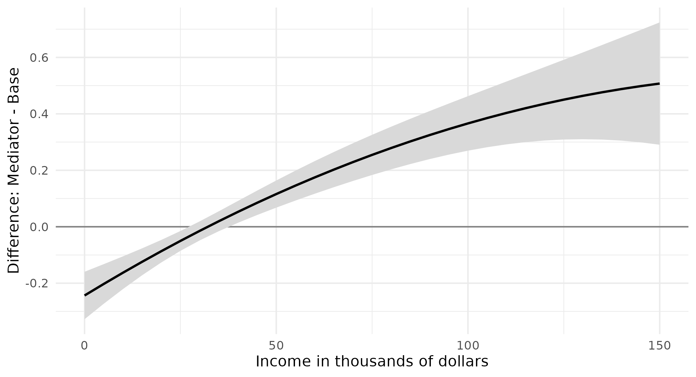
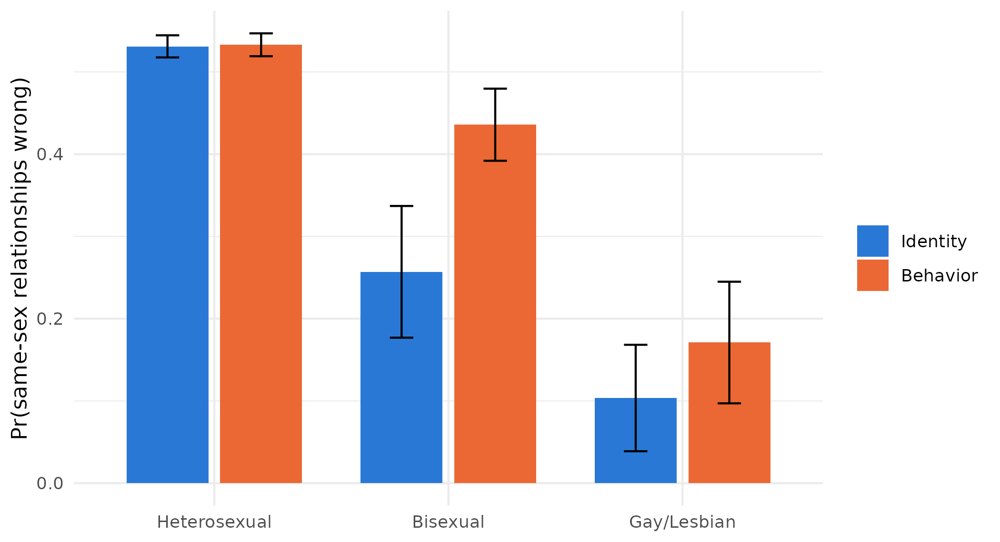
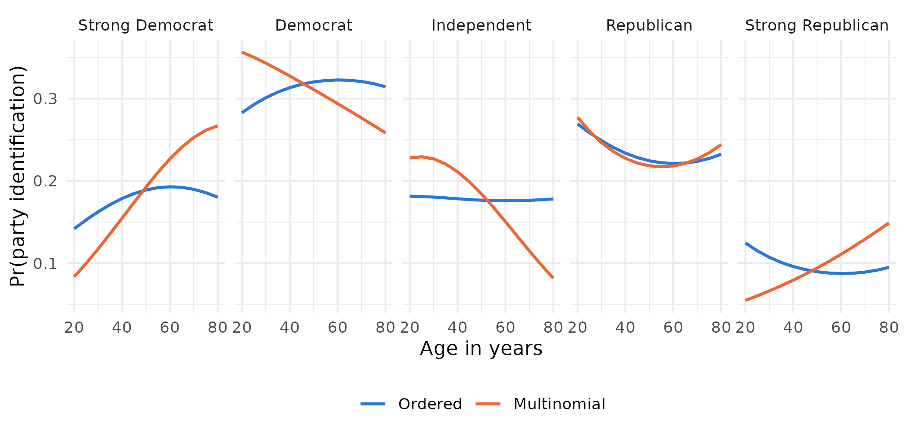
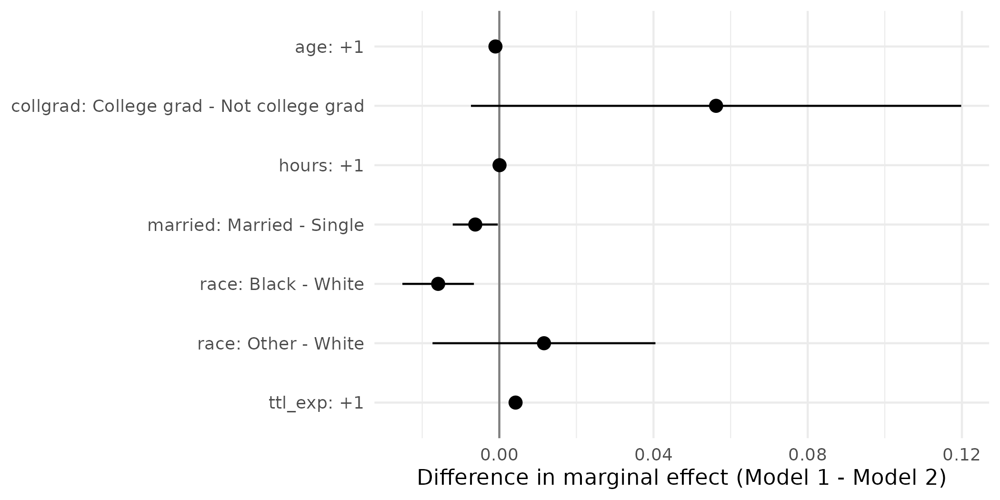

Predictions and graphs
After suest(), predictions from every model come from the same call, and differences between the models’ predictions can be tested directly. This page remakes Figures 3 to 6 of Mize, Doan, and Long (2019).
library(suest)
library(marginaleffects)
library(haven)
library(ggplot2)
theme_set(theme_minimal())
ah <- zap_labels(read_dta("https://tdmize.github.io/data/data/ah4_cme.dta"))
gss <- zap_labels(read_dta("https://tdmize.github.io/data/data/gss_cme.dta"))
factorize <- function(data, variables) {
data[variables] <- lapply(data[variables], factor)
data
}Predictions from each model (Figure 3)
Example 6.1 regresses depressive symptoms on income and income squared, then adds job satisfaction as a possible mediator.
vars61 <- c("depsympB", "income", "inc10", "age", "woman", "race", "college", "jobsat")
dat61 <- ah[complete.cases(ah[vars61]), ]
dat61 <- factorize(dat61, c("woman", "race", "jobsat"))
base61 <- lm(depsympB ~ income + I(income^2) + age + woman + race, data = dat61)
mediator61 <- lm(depsympB ~ income + I(income^2) + age + woman + race + jobsat,
data = dat61)
fit61 <- suest(base61, mediator61, model_names = c("Base", "Mediator"))The predicted number of depressive symptoms at each level of income, from each model, averaged over the other variables:
pred61 <- avg_predictions(fit61, variables = list(income = seq(0, 150, 5)),
newdata = dat61)
ggplot(pred61, aes(income, estimate, ymin = conf.low, ymax = conf.high)) +
geom_ribbon(fill = "grey85") +
geom_line(linewidth = 0.8) +
facet_wrap(~ group) +
labs(x = "Income in thousands of dollars", y = "Depressive symptoms")
The difference in predictions across models (Figure 4)
The difference between the two models’ predictions at each level of income, with its confidence interval:
diff61 <- avg_predictions(fit61, variables = list(income = seq(0, 150, 5)),
newdata = dat61,
hypothesis = difference ~ pairwise | income)
diff61[diff61$income %in% c(0, 50, 100, 150), ] income Hypothesis Estimate Std. Error z Pr(>|z|) S 2.5 % 97.5 %
0 (Mediator) - (Base) -0.244 0.0429 -5.68 <0.001 26.1 -0.3276 -0.159
50 (Mediator) - (Base) 0.116 0.0245 4.72 <0.001 18.7 0.0677 0.164
100 (Mediator) - (Base) 0.366 0.0493 7.43 <0.001 43.1 0.2696 0.463
150 (Mediator) - (Base) 0.507 0.1106 4.59 <0.001 17.8 0.2907 0.724
Type: responseggplot(diff61, aes(income, estimate, ymin = conf.low, ymax = conf.high)) +
geom_hline(yintercept = 0, color = "grey50") +
geom_ribbon(fill = "grey85") +
geom_line(linewidth = 0.8) +
labs(x = "Income in thousands of dollars",
y = "Difference: Mediator - Base")
Above an income of about 40 thousand dollars, the mediator model predicts more depressive symptoms than the base model, and the confidence interval excludes zero.
Predicted probabilities from alternative predictors (Figure 5)
Example 6.3 predicts whether a person views same-sex relationships as wrong from sexual orientation measured two ways: by sexual identity in one logit and by sexual behavior in the other.
vars63 <- c("samesexB", "sexident", "sexbehav", "college",
"woman", "race", "age", "year")
dat63 <- gss[complete.cases(gss[vars63]), ]
dat63 <- factorize(dat63, c("sexident", "sexbehav", "college", "woman", "race", "year"))
identity63 <- glm(samesexB ~ sexident + woman + college + age + race + year,
family = binomial("logit"), data = dat63)
behavior63 <- glm(samesexB ~ sexbehav + woman + college + age + race + year,
family = binomial("logit"), data = dat63)
fit63 <- suest(identity63, behavior63, model_names = c("Identity", "Behavior"))Each model’s predicted probability for each orientation category. Setting both measures to the same category gives, for each category, the identity model’s prediction and the behavior model’s prediction:
orientation <- levels(dat63$sexident)
pred63 <- avg_predictions(fit63,
variables = list(sexident = orientation, sexbehav = orientation),
newdata = dat63)
pred63 <- pred63[pred63$sexident == pred63$sexbehav, ]
pred63$orientation <- factor(pred63$sexident,
labels = c("Heterosexual", "Bisexual", "Gay/Lesbian"))
pred63 Group sexident sexbehav Estimate Std. Error z Pr(>|z|) S 2.5 % 97.5 %
Identity 1 1 0.531 0.00686 77.36 < 0.001 Inf 0.5176 0.545
Identity 2 2 0.257 0.04085 6.29 < 0.001 31.6 0.1769 0.337
Identity 3 3 0.104 0.03302 3.14 0.00171 9.2 0.0388 0.168
Behavior 1 1 0.533 0.00710 75.07 < 0.001 Inf 0.5191 0.547
Behavior 2 2 0.436 0.02236 19.49 < 0.001 278.6 0.3920 0.480
Behavior 3 3 0.171 0.03772 4.53 < 0.001 17.4 0.0971 0.245
Type: responseggplot(pred63, aes(orientation, estimate, fill = group,
ymin = conf.low, ymax = conf.high)) +
geom_col(position = position_dodge(0.8), width = 0.7) +
geom_errorbar(position = position_dodge(0.8), width = 0.2) +
scale_fill_manual(values = c(Identity = "#2a78d6", Behavior = "#eb6834")) +
labs(x = NULL, y = "Pr(same-sex relationships wrong)", fill = NULL)
The difference between the two measures in each category:
orientation_differences <- function(x) {
same <- x$sexident == x$sexbehav
data.frame(
term = c("Heterosexual", "Bisexual", "Gay/Lesbian"),
estimate = x$estimate[same & x$group == "Behavior"] -
x$estimate[same & x$group == "Identity"])
}
avg_predictions(fit63,
variables = list(sexident = orientation, sexbehav = orientation),
newdata = dat63, hypothesis = orientation_differences) Term Estimate Std. Error z Pr(>|z|) S 2.5 % 97.5 %
Heterosexual 0.00192 0.00193 0.996 0.3194 1.6 -0.00186 0.00569
Bisexual 0.17883 0.04136 4.324 <0.001 16.0 0.09778 0.25989
Gay/Lesbian 0.06745 0.04013 1.681 0.0928 3.4 -0.01121 0.14611
Type: responseOnly for people classified as bisexual do the two measures give a different answer.
Two model types for one outcome (Figure 6)
Example 6.5 fits an ordinal logit and a multinomial logit to the same five-category party identification.
vars65 <- c("partyid5", "woman", "edyrs", "age", "parent", "married",
"faminc", "employed", "region4", "year", "race")
dat65 <- subset(gss, year >= 2010)
dat65 <- dat65[complete.cases(dat65[vars65]), ]
dat65 <- factorize(dat65, c("woman", "parent", "married", "race",
"employed", "region4", "year"))
party_labels <- c("Strong Democrat", "Democrat", "Independent",
"Republican", "Strong Republican")
dat65$party_ord <- ordered(dat65$partyid5, levels = 0:4, labels = party_labels)
dat65$party_nom <- factor(dat65$partyid5, levels = 0:4, labels = party_labels)
ordered65 <- MASS::polr(party_ord ~ age + I(age^2) + woman + edyrs + parent +
married + race + faminc + employed + region4 + year,
data = dat65, method = "logistic", Hess = TRUE)
nominal65 <- nnet::multinom(party_nom ~ age + I(age^2) + woman + edyrs + parent +
married + race + faminc + employed + region4 + year,
data = dat65, Hess = TRUE, trace = FALSE)
fit65 <- suest(ordered65, nominal65, model_names = c("Ordered", "Multinomial"))The predicted probability of each category across age, from each model:
pred65 <- avg_predictions(fit65, variables = list(age = seq(20, 80, 5)),
newdata = dat65, vcov = FALSE)
pred65$model <- factor(sub("::.*", "", pred65$group),
levels = c("Ordered", "Multinomial"))
pred65$party <- factor(sub(".*::", "", pred65$group), levels = party_labels)
ggplot(pred65, aes(age, estimate, color = model)) +
geom_line(linewidth = 0.8) +
facet_wrap(~ party, nrow = 1) +
scale_color_manual(values = c(Ordered = "#2a78d6", Multinomial = "#eb6834")) +
labs(x = "Age in years", y = "Pr(party identification)", color = NULL) +
theme(legend.position = "bottom")
The ordered model forces one pattern on every category, so the probability of being an independent barely moves with age, while the multinomial model lets it fall steeply. The tests of whether the age effects differ across the two models are on the different model types page.
Graphs of marginal effects and their differences
The marginal effects from each model, and their cross-model differences, can be plotted from the avg_comparisons() and hypotheses() results. Two logit models of union membership, the second adding education and wages:
nlsw <- read_dta("https://tdmize.github.io/data/data/nlsw88.dta")
vars <- c("union", "married", "age", "race", "hours", "collgrad", "ttl_exp",
"grade", "wage")
nlsw <- nlsw[complete.cases(nlsw[vars]), ]
nlsw[c("married", "race", "collgrad")] <-
lapply(nlsw[c("married", "race", "collgrad")], as_factor)
nlsw <- zap_labels(nlsw)
model1 <- glm(union ~ married + age + race + hours + collgrad + ttl_exp,
family = binomial("logit"), data = nlsw)
model2 <- glm(union ~ married + age + race + hours + collgrad + ttl_exp +
grade + wage, family = binomial("logit"), data = nlsw)
fit_union <- suest(model1, model2, model_names = c("Model 1", "Model 2"))
effects_union <- avg_comparisons(fit_union,
variables = list(married = "reference", age = 1, race = "reference",
hours = 1, collgrad = "reference", ttl_exp = 1),
newdata = nlsw)
effects_union$effect <- paste0(effects_union$term, ": ", effects_union$contrast)
effects_union$effect <- factor(effects_union$effect,
levels = rev(unique(effects_union$effect)))ggplot(effects_union, aes(estimate, effect, xmin = conf.low, xmax = conf.high,
color = group)) +
geom_vline(xintercept = 0, color = "grey50") +
geom_pointrange(position = position_dodge(0.5)) +
scale_color_manual(values = c("Model 1" = "#2a78d6", "Model 2" = "#eb6834")) +
labs(x = "Average marginal effect on Pr(union)", y = NULL, color = NULL)
The cross-model differences with their confidence intervals:
differences_union <- hypotheses(effects_union,
hypothesis = difference ~ revpairwise | effect)
ggplot(differences_union, aes(estimate, effect,
xmin = conf.low, xmax = conf.high)) +
geom_vline(xintercept = 0, color = "grey50") +
geom_pointrange() +
labs(x = "Difference in marginal effect (Model 1 - Model 2)", y = NULL)